首尔共享单车小时租借量预测研究
纯R报告撰写材料：完整逐日验证、ARIMA日周结构补强和强基线。数据处理、模型训练、图表、报告生成和验收均由R执行，不调用其他分析语言。研究对象为每小时实际发生的租借量。
摘要建议
本文使用2017-12-01至2018-11-30的8,760个连续小时记录，保留295个非运营零值。初始训练为前八个月，8—9月完整逐日验证，10—11月固定历史测试比较。对28个ARIMA类候选尝试完整验证，24个完成、4个记录失败；七组R ranger随机森林均以400棵树完成61个验证日。首次拟合后统一每周一重估，日内不读取真实租借量。
全部测试小时中RandomForest的RMSE最低，为443.390；SARIMA、SARIMAX、R随机森林分别为460.089、469.089、443.390。验证预先选出的最强基线为DayTypeMean28，其测试RMSE为458.132。
评价边界：原有10—11月测试结果已经查看。新配置仅按开发验证选择，新测试属于补充历史评价，不称为全新盲测。reference_v1/仅保留固定参照，最终R随机森林使用ranger重新训练，不能假定与早期其他实现得到相同数值。
第一章 概述与数据
任务是在前一天23:00，利用起点前租借量、历史天气和可提前知道的日历信息，预测次日00:00—23:00。数据没有站点库存、容量或调度成本，不直接生成调度方案，也不还原停运期间未满足的潜在需求。
数据来自UCI Seoul Bike Sharing Demand，DOI 10.24432/C5F62R，CC BY 4.0。官方页面：https://archive.ics.uci.edu/dataset/560/seoul+bike+sharing+demand 。原始ZIP、CSV与来源记录在data/raw/。日期按日/月/年解析，时区Asia/Seoul；保留完整小时轴，未插值、未删除停运零值。
表 1-1 数据核验
表 1-2 描述统计
表 1-3 时间划分与停运分布测试非运营占10.31%，初始训练仅0.82%。运营标记未作为目标日输入。
 图 1-1 全年租借量、停运与时间划分
图 1-1 全年租借量、停运与时间划分全年展示用于描述；仅一年历史不能证明跨年周期，天气相关不能作因果解释。
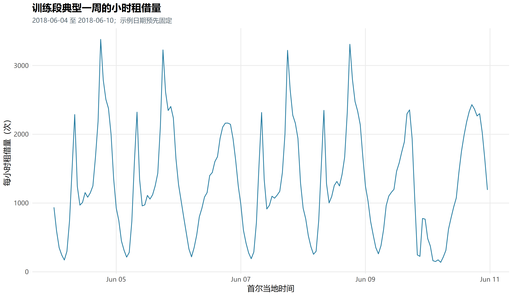
图 1-2 训练段一周小时曲线
 图 1-3 训练段工作日与周末小时模式
图 1-3 训练段工作日与周末小时模式
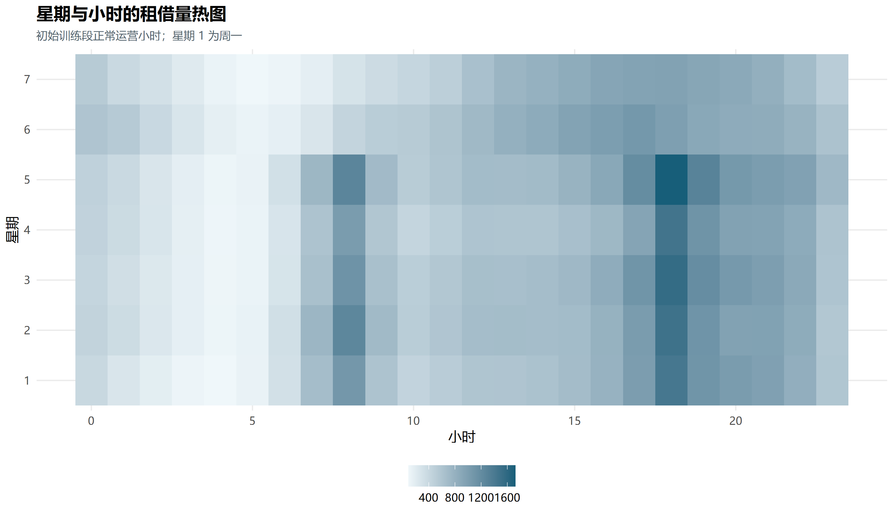
图 1-4 训练段星期与小时热图
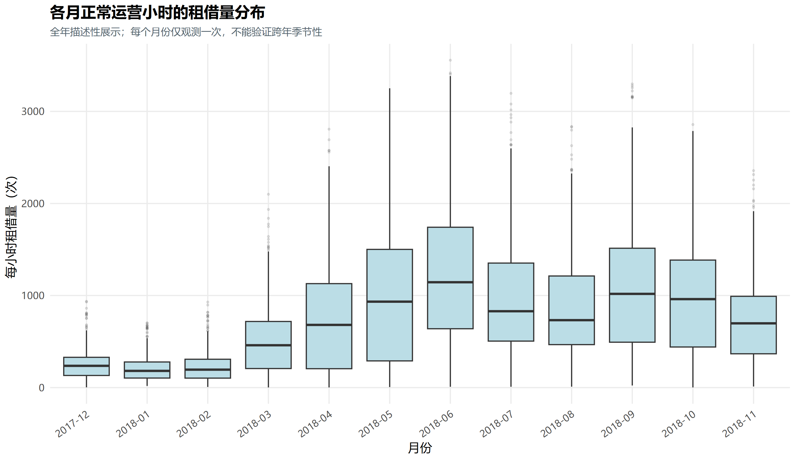
图 1-5 各月正常运营小时分布全年展示用于描述；仅一年历史不能证明跨年周期，天气相关不能作因果解释。
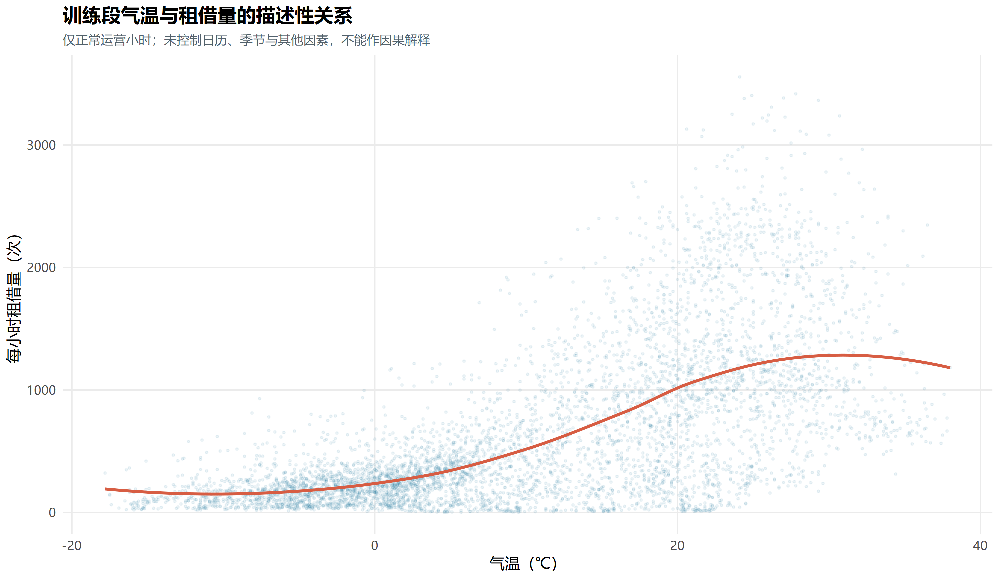
图 1-6 训练段气温与租借量全年展示用于描述；仅一年历史不能证明跨年周期，天气相关不能作因果解释。
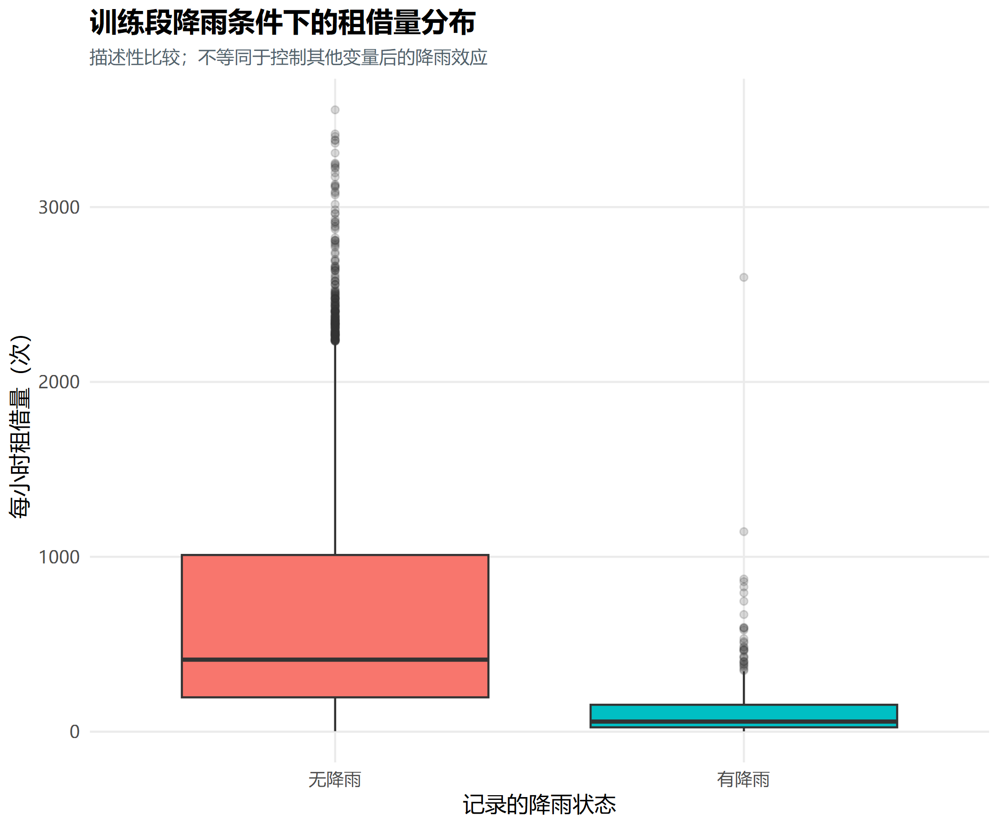
图 1-7 训练段降雨分组分布全年展示用于描述；仅一年历史不能证明跨年周期，天气相关不能作因果解释。
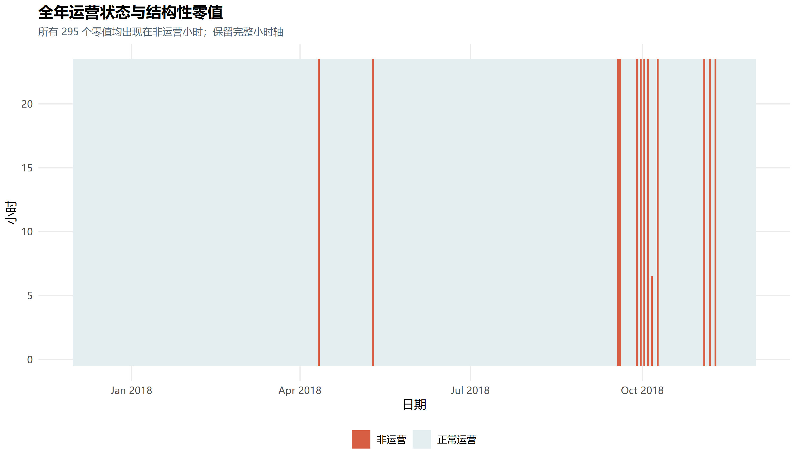
图 1-8 全年小时运营状态
第二章 模型识别与完整验证
ADF原假设为单位根，KPSS原假设为平稳。初始训练段检验存在分歧，使用168小时滞后或带宽后判断也会变化。结合差分、ACF/PACF、日周规律、训练窗口和完整验证选择模型，不能凭一个p值证明模型充分。
表 2-1 平稳性检验与敏感性
 图 2-1 训练段多重季节分解
图 2-1 训练段多重季节分解
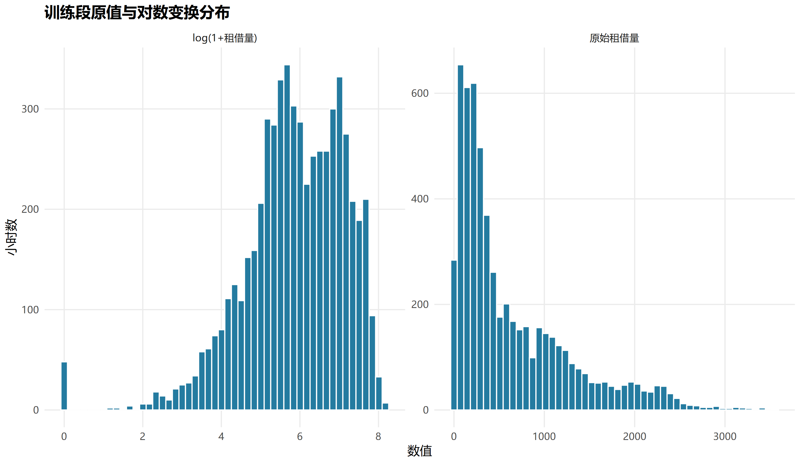
图 2-2 训练段原值与变换分布
 图 2-3 训练段 log1p 的 ACF/PACF
图 2-3 训练段 log1p 的 ACF/PACF
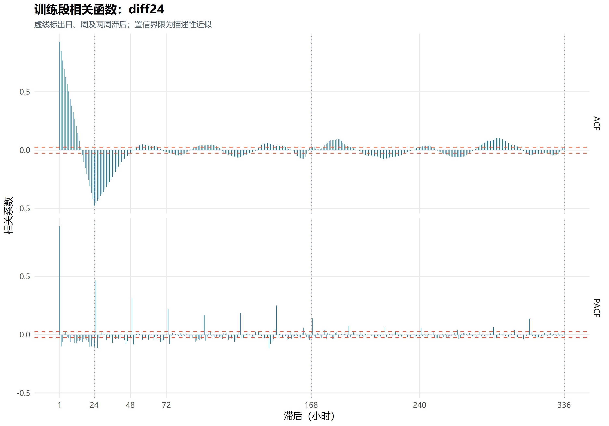
图 2-4 训练段 diff24 的 ACF/PACF
 图 2-5 训练段 diff1_diff24 的 ACF/PACF
图 2-5 训练段 diff1_diff24 的 ACF/PACF
 图 2-6 训练段不同差分方案比较
图 2-6 训练段不同差分方案比较
取消仅覆盖星期三的初筛，有限候选均尝试完整61天验证。验证起始日先拟合，此后每周一重估；测试使用相同日历规则。周内ARIMA更新状态，随机森林使用最新历史特征，全部完成候选覆盖周一至周日。失败候选记录收敛、协方差或预设计算预算原因，不将超时等同于统计表现差。
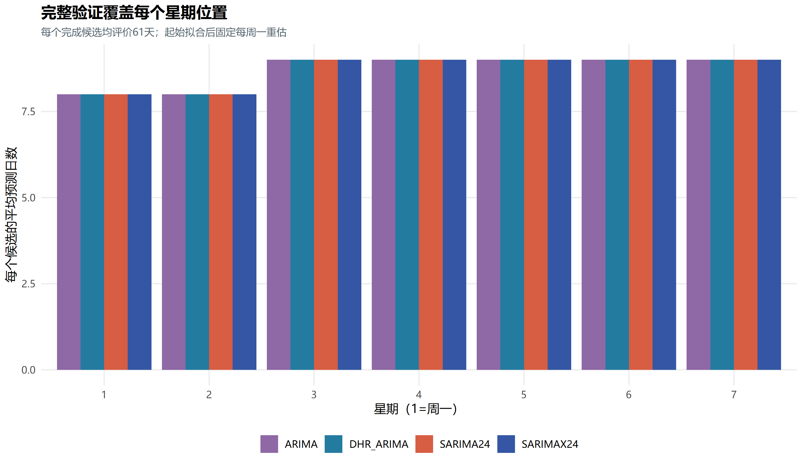
图 2-7 完整验证的星期覆盖每个完成候选覆盖61日、1,464小时，各星期位置有8或9个预测日。
表 2-2 全候选完整验证仅用全部小时验证RMSE选择，MAE辅助；失败候选不参与排名。
结构优化将周内日历及工作日类型交互与日周期随机误差结合，新增SARIMAX24。差分与回归项共同检查，避免24小时季节差分消除同周期Fourier项。窗口内全零、常量或差分后不可识别的回归列被删除，预测沿用相同列结构；无法估计的节假日效应不作额外解释。
表 2-3 所选模型结构window_days=0表示扩展窗口。
表 2-4 同口径信息准则只在变换、起止与差分相同的组内比较AICc。最终模型仍按完整验证误差选择。
表 2-5 测试起点前完整参数标准误与p值为选模后条件渐近量，不作因果解释。完整参数可置于附录。
ARIMA：z_t=y_t；(1 − 0.727025 B − 0.149356 B^2 + 0.121812 B^3)(1)(1−B)^1z_t = (1 − 0.540310 B − 0.459679 B^2)(1) ε_t。B为一小时滞后，MA符号遵循forecast。
DHR_ARIMA：z_t=y_t，z_t=951.815407+x_t'β+u_t；(1 − 0.668718 B − 0.186265 B^2)(1)u_t = (1 + 0.179532 B − 0.138181 B^2)(1) ε_t。B为一小时滞后，MA符号遵循forecast。
SARIMA24：z_t=y_t；(1 − 0.831856 B)(1)(1−B^24)^1z_t = (1 + 0.273726 B)(1 − 0.934000 B^24) ε_t。B为一小时滞后，MA符号遵循forecast。
SARIMAX24：z_t=y_t，z_t=952.455635+x_t'β+u_t；(1 − 1.096158 B + 0.188820 B^2)(1 − 0.984845 B^24)u_t = (1 − 0.060296 B − 0.148047 B^2)(1 − 0.869532 B^24) ε_t。B为一小时滞后，MA符号遵循forecast。
表 2-6 残差诊断p值使用卡方生存函数。小于数值精度而返回零的值展示为<1e-15。工程验收不能替代白噪声检验。
表 2-7 残差结构的原版本参照各模型窗口与样本数可能不同，仅作诊断线索；两个开发起点的完整诊断另见training_diagnostics_two_origins.csv。
表 2-8 同一新协议内的结构优化新SARIMAX与新协议下所选纯SARIMA比较，不将协议变化归因于单个特征。
ARIMA：残差ACF(24)=0.646、ACF(168)=0.654；168小时检验仍拒绝无自相关原假设，保留残余相关限制。
DHR_ARIMA：残差ACF(24)=0.452、ACF(168)=0.414；168小时检验仍拒绝无自相关原假设，保留残余相关限制。
SARIMA24：残差ACF(24)=0.100、ACF(168)=0.298；168小时检验仍拒绝无自相关原假设，保留残余相关限制。
SARIMAX24：残差ACF(24)=0.156、ACF(168)=0.237；168小时检验仍拒绝无自相关原假设，保留残余相关限制。
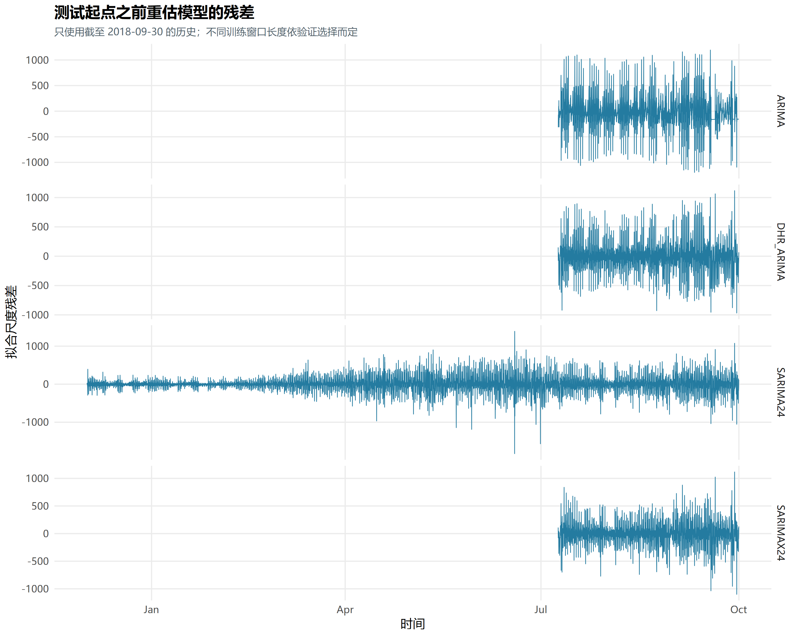
图 2-8 所选 ARIMA 类模型的训练残差
 图 2-9 所选模型的残差自相关
图 2-9 所选模型的残差自相关
 图 2-10 所选模型残差正态 Q–Q 图
图 2-10 所选模型残差正态 Q–Q 图
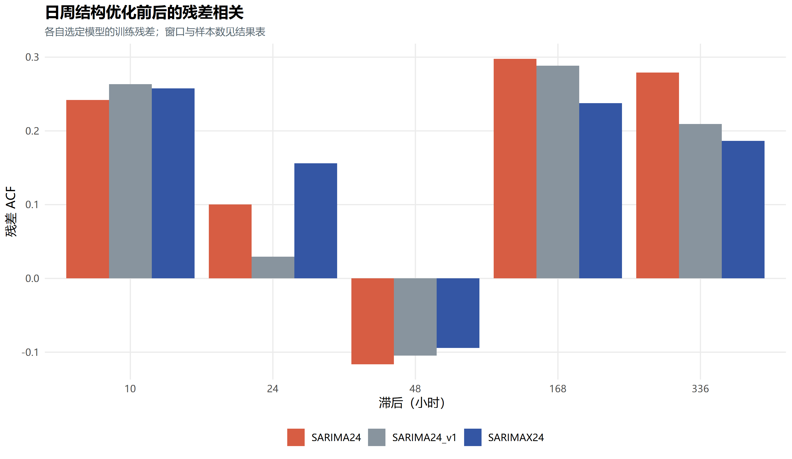
图 2-11 ARIMA结构优化的残差证据
第三章 短期预测与强基线
Mean7使用过去七天同小时均值，Median7使用其中位数，DayTypeMean28使用过去28天同属工作日或周末的同小时均值，后者不单独分类节假日、不删除历史零值。全部源时间不超过预测起点，明细见baseline_source_time_audit.csv。
表 3-1 五种透明基线
表 3-2 基线与季节ARIMA测试比较
验证预先选择的最强基线为DayTypeMean28，验证RMSE=481.235；SARIMAX相对该基线的测试RMSE变化为+2.39%。全部五个基线均报告，不按测试误差重新选参照。
MAE/RMSE单位为次/小时，全部1,464小时是主要评价，正常运营1,313小时为事后补充。MASE分母仅取评价起点前168小时季节朴素历史误差，MASE大于1不等于比本测试段基线差。sMAPE对零值敏感，作为辅助。运营标记未作为目标日输入。
点预测及区间下界统一截为非负。对数ARIMA使用高斯变换方差作均值调整；随机森林对数候选直接逆变换，不宣称原尺度条件均值。区间同时评价覆盖、宽度与Winkler评分。
表 3-3 区间覆盖与宽度
 图 3-1 SARIMA24 测试段预测区间示例
图 3-1 SARIMA24 测试段预测区间示例
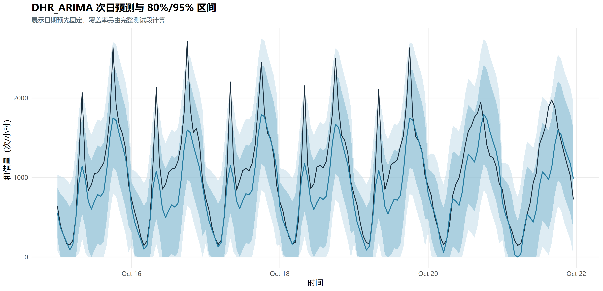
图 3-2 DHR_ARIMA 测试段预测区间示例
 图 3-3 SARIMAX24 测试段预测区间示例
图 3-3 SARIMAX24 测试段预测区间示例
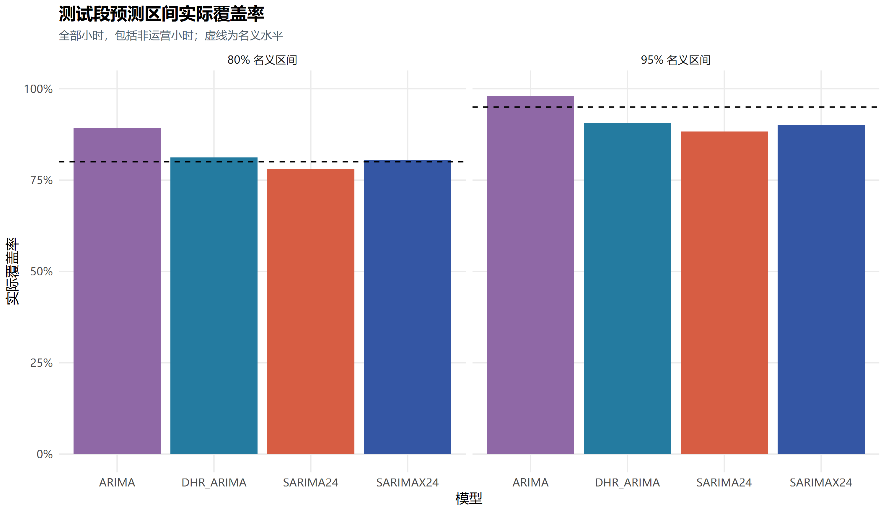
图 3-4 测试段 80%/95% 区间实际覆盖率
表 3-4 季节日历模型的末端24小时外推日期2018-12-01，普通非节假日情景；没有未来真实值可核验，未输入未来实测天气或运营状态。
 图 3-5 2018 年 12 月 1 日历史外推
图 3-5 2018 年 12 月 1 日历史外推
第四章 R随机森林及模型比较
随机森林是第四章可选的机器学习对照，课程没有点名要求它。本项目用R ranger实现，输入为24/48/168/336小时历史、过去七天同小时均值、起点前24/168小时统计、前一天曲线、日历及可选24小时前天气。七组配置在相同61天、相同400棵树下验证。
R随机森林选定RF_raw_84_leaf5_weather：窗口84天、最小叶样本数5、候选特征比例0.8、400棵树、最大深度20、种子20261026；天气滞后使用情况为TRUE。模型保存在RDS中。
表 4-1 七组R随机森林完整验证
表 4-2 所选模型与基线验证比较
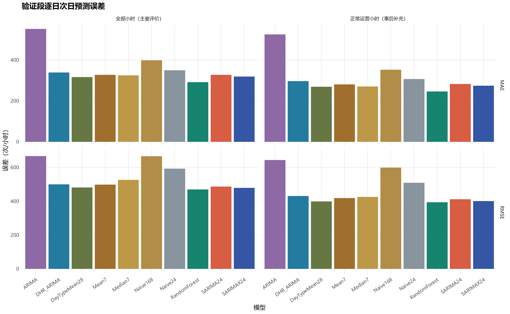
图 4-1 验证段所选模型与基线误差
表 4-3 固定历史测试完整比较最强基线先在验证段选定；新测试属于补充历史评价。
 图 4-2 测试段全部小时及正常运营小时误差
图 4-2 测试段全部小时及正常运营小时误差
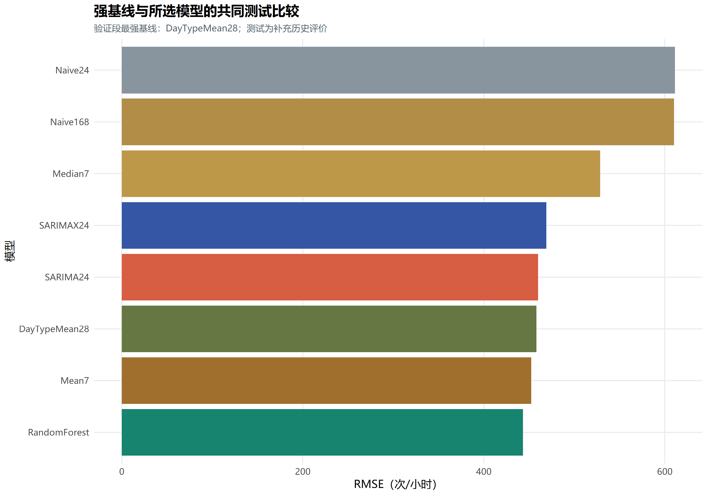
图 4-3 强基线与模型的测试误差
 图 4-4 测试段固定一周的模型预测对比
图 4-4 测试段固定一周的模型预测对比
 图 4-5 停运附近的预测误差与模型局限
图 4-5 停运附近的预测误差与模型局限
 图 4-6 不同预测步长的测试误差
图 4-6 不同预测步长的测试误差固定起点使步长与目标小时对应，曲线同时反映日内时段难度。
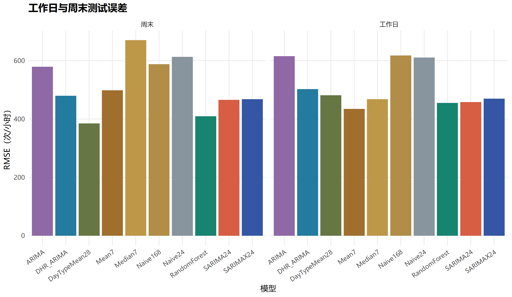
图 4-7 工作日与周末的测试误差
 图 4-8 随机森林训练特征重要性
图 4-8 随机森林训练特征重要性
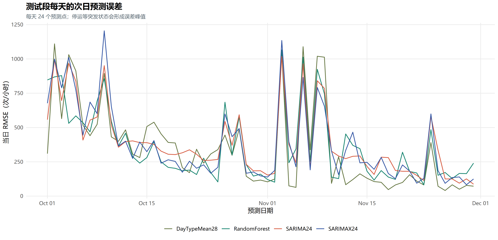
图 4-9 逐日次日预测误差
表 4-4 不同时段误差
表 4-5 运营状态分组误差非运营小时占10.31%，事后分组不意味着能提前知道停运。
表 4-6 原版本与新版本固定参照验证更新日、候选覆盖和随机森林实现变化，差异不能归因于单一因素；不按测试结果保留方案。
本轮改善的具体范围：普通ARIMA测试RMSE由673.453降至606.216（下降9.98%），纯SARIMA由477.154降至460.089（下降3.58%），DHR未变化。这些是同一固定历史测试段的描述性差异，不能分离候选覆盖、重估日和模型配置各自的贡献，也没有据此证明在其他时期显著更优。
结构补强没有带来全面提升：SARIMAX相对纯SARIMA的完整验证RMSE下降1.65%，但测试RMSE为469.089，高于纯SARIMA的460.089（增加1.96%）。因此保留SARIMAX作为有收益也有局限的实验，不能将其宣称为优于SARIMA的最终答案。
强基线改变了结论的力度：七日同小时均值的测试RMSE为452.327，优于两个季节ARIMA；验证预选的DayTypeMean28在测试段MAE为282.198，也低于R随机森林的289.249。R随机森林虽然全小时RMSE最低，但只比验证预选基线降低3.22%、比七日均值降低1.98%，且其早期与本轮实现不同，不能把前后差值全部归因于模型优化。不同损失函数的排名应分别解释。
点预测改善也不等于区间已校准：纯SARIMA与SARIMAX的名义95%区间在全部测试小时仅覆盖88.32%和90.16%。结合残差相关，区间仍存在覆盖不足，不能只展示一周图形就宣称不确定性估计可靠。
第五章 课程总结与局限
本轮完成完整逐日验证、ARIMA日周结构补强与更强基线；语言统一为R。仍需保留：仅一年历史、秋季测试的范围限制、未知停运、没有真实天气预报、时间相关误差、残余相关和重尾对推断与区间的影响。没有使用独立样本假设证明模型普遍更优。
高阶候选因收敛、协方差或计算预算失败时记录为未完成，不证明统计表现差。当前仍是有限候选集合，后续研究需固定规则，避免反复依据已经查看的测试段调整。
参考文献
[1] UCI. Seoul Bike Sharing Demand. DOI:10.24432/C5F62R. https://archive.ics.uci.edu/dataset/560/seoul+bike+sharing+demand
[2] Hyndman RJ, Athanasopoulos G. Forecasting: Principles and Practice. https://otexts.com/fpp3/
[3] forecast documentation. https://pkg.robjhyndman.com/forecast/
[4] Breiman L. Random Forests. Machine Learning. 2001;45:5–32.
[5] Wright MN, Ziegler A. ranger. Journal of Statistical Software. 2017;77(1). https://doi.org/10.18637/jss.v077.i01
附录 纯R复现与材料使用
运行Rscript --vanilla scripts/run_all.R或run.ps1。全部实验、报告和验收仅依赖R；主要包为forecast、ggplot2、urca、ranger和jsonlite。模型以RDS保存，软件版本见r_package_versions.csv及r_session_info.txt。候选起点拟合对象按代码、数据和协议签名缓存。
report_ready.html离线查看，report_materials.md可编辑，results/report_tables/提供表格，report_figure_manifest.csv提供图号。原结果参照、协议、星期覆盖、删列记录和时间边界审计在results/。正文可精选图表，完整参数等放附录。